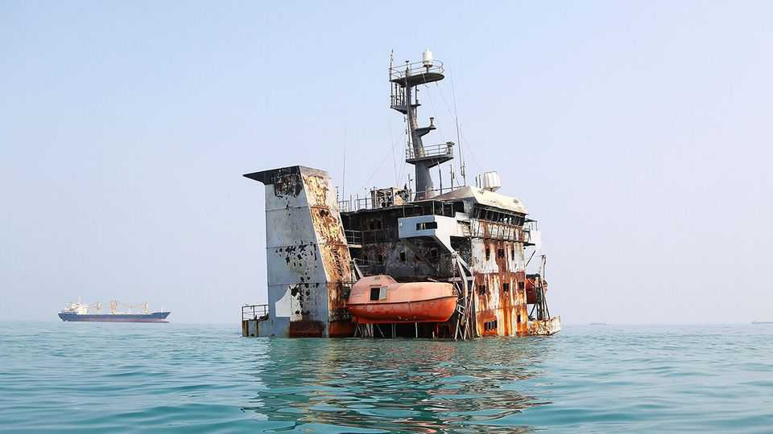

Politics

Sep 10th 2026
The Alternative for Germany (AfD) took 44% of the vote in an election in the eastern German state of Saxony-Anhalt, its best-ever result. The AfD is now close to becoming the first populist-right party to win control of a German state since the second world war. Friedrich Merz, Germany’s chancellor, described the result as “seismic”. His Christian Democrats slumped to just 17% of the vote. The AfD fell short of an overall majority in Saxony-Anhalt and the established parties have ruled out working with it. One route to power may be a deal with the BSW, a small populist party that shares the AfD’s pro-Russian sympathies and hostility to immigration.
Jared Kushner and Steve Witkoff, Donald Trump’s envoys, held talks with Volodymyr Zelensky in Kyiv and Vladimir Putin in Moscow. The Americans spoke of a new impetus to finding peace, but nothing substantive was announced. Russia resumed its bombardment of Kyiv, which it had suspended while Mr Kushner and Mr Witkoff were in the Ukrainian capital. Soon after, a drone reportedly exploded in Moldova, delaying Mr Zelensky’s plane as he travelled en route to the funeral of Norway’s King Harald.
Russia and North Korea opened their first cross-border road link. Spanning the Tumen river, the bridge is around 200km (125 miles) from Vladivostok, Russia’s main Pacific port. Both countries said the crossing would encourage tourism and improve cargo links, but observers think it could also be used to speed the flow of North Korean weapons to Russia.
The Hungarian government expelled ten Russian diplomats for “unacceptable” activities. It was another clear indication of Hungary’s tougher approach to its relations with Russia after the fall of the previous pro-Russian government led by Viktor Orban. Hungary pointed out that the expulsions did not equate to a break in diplomatic relations, but Russia says its response to the “Russophobic lobby will be harsh and painful”.
In Serbia, thousands of people attended the funeral of Ratko Mladic, a Bosnian-Serb commander who was convicted of overseeing the massacre of 8,000 Bosniak men and boys at Srebrenica in 1995 and of conducting the siege of Sarajevo. He died in a UN hospital while serving a life sentence. The outpouring of grief for Mladic in Belgrade was condemned by the European Union, which described it as a “glorification of war criminals” that had no place in a country seeking EU membership.
Meanwhile, the Serbian government asked Aleksandar Vucic, the president, to call a snap election. Mr Vucic and his government have faced a series of long-running anti-corruption protests, triggered by the collapse of a railway station roof in 2024 that killed 16 people. He has been president since 2017, but wants to run again for prime minister, a job he held from 2014 to 2017.
The EU said it would provide another €200m ($235m) to Greenland for investments across numerous projects. On a visit to the Danish territory, Ursula von der Leyen, the president of the European Commission, said that “Greenland can count on the EU.” Meanwhile, Donald Trump posted an image of the American flag overlaid on Greenland, Iceland and other countries. The Icelandic government summoned the American ambassador for an explanation.
The British government confirmed its “unwavering” support for the wish of Falkland Islanders to remain British. This came after Javier Milei, Argentina’s president, reiterated his country’s claim to the islands, which lie 480km (300 miles) off the Argentine coast. Argentina’s government then filed criminal charges against an Israeli firm involved in an offshore oil project, claiming that any oil near the islands belongs to Argentina. In 1982 an Argentine dictator started a war with Britain by invading the islands, which have never belonged to Argentina, and lost. In a referendum in 2013, 99.8% of voters in the Falklands favoured staying British.

America and Iran escalated attacks on each other. America hit five Iranian tankers, including four in the Gulf of Oman and one near Kharg island, after Iran targeted one of its warships. Iran responded by launching missiles at an American base in Jordan and claimed to have attacked two American vessels and eight oil tankers in the Strait of Hormuz. It warned of a “faster, heavier and more painful” response to American attacks.
The Iranian government announced that it would double the price of petrol for any purchases above a quota of 110 litres a month for each motorist, indicating that American attacks on oil refineries and a blockade of Iran’s ports are having an effect. Petrol in Iran is heavily subsidised and politically sensitive.
The Houthis, an Iranian-backed rebel group in Yemen, attacked four cities in Saudi Arabia. Their targets included a large refinery belonging to Saudi Aramco, the national oil company, in the city of Jizan. More than 70 people were wounded. Saudi Arabia vowed to retaliate. Pakistan, which has formed a military alliance with Saudi Arabia, reportedly warned Iran to restrain its Houthi allies.
In co-ordination with other countries, Britain’s foreign secretary, Ed Miliband, imposed sanctions on illegal Israeli settlements in the West Bank. There is little direct trade with settlements to restrict and Mr Miliband stressed that Britain does not want to isolate Israel and will continue trading with “Green Line Israel”. That led observers to conclude that the announcement’s main intent was to stop the flow of Muslim voters from the Labour Party to the Greens. Israel said it would close the British consulate in Jerusalem, among other retaliatory measures.
William Ruto, Kenya’s president, warned foreigners running small businesses that they had 90 days to ensure they were in the country legally or they would have to cease trading. Mr Ruto had earlier said all foreign “hawkers” must leave by September 7th to protect native traders, sparking vigilante attacks on foreign stallholders and panic among migrants.
The UN’s General Assembly voiced its support for a new map that better reflects the true size of Africa, following a campaign led by Togo. Nearly every member state said it would encourage the phasing-out of the standard Mercator map, which makes countries around the Equator appear smaller than equally sized areas nearer the poles. America was the only vote against the proposal.
The Republicans gathered for a convention in Dallas ahead of November’s midterms. Party conventions are normally held in presidential-election years, but Mr Trump used the event to rally MAGA troops and give airtime to candidates who are running in tight races. He also promised a $5,000 pay out to all adults if the Republicans keep control of Congress, which would cost $1.3trn if it were ever enacted. J.D. Vance prepared to give a keynote speech, hinting that he should be their presidential nominee in 2028.